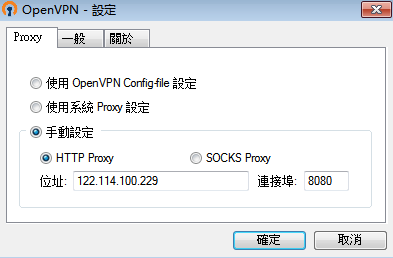

1 安装环境
Centos6.5
openvpn2.3.11
2 步骤
2.1 添加fedora的yum源
1 | rpm -ivh http://mirrors.ustc.edu.cn/fedora/epel/6/x86_64/epel-release-6-8.noarch.rpm |
2.2 安装openvpn
1 | yum install openvpn -y |
2.3 安装openvpn认证插件
1 | yum install openvpn-auth-ldap -y |
2.4 安装easy-rsa
由于openvpn2.3之后，在openvpn里面剔除了easy-rsa文件，所以需要单独安装
1 | yum install easy-rsa |
2.5 生成openvpn的key及证书
修改/opt/openvpn/etc/easy-rsa/2.0/vars参数
1 | $ vi vars |
保存退出
2.5.1 初始化
source vars 或者 . ./vars(两个点之间有空格) # 初始化命令
./clean-all #初始化，删除原证书文件
./build-ca #制作ca证书
./build-dh #
./build-key-server server #制作服务器证书
./build-key client #制作客户端证书
2.6 编辑openvpn服务端配置文件：
1 | $ cat /etc/openvpn/server.conf |
1 | port 1194 |
2.7 修改openvpn-ldap-auth的配置文件：
1 | vi /etc/openvpn/auth/ldap.conf |
1 | <LDAP> |
2.8 拷贝/etc/openvpn/key目录下的ca.crt证书，以备客户端使用。
注：客户端使用ca.crt和客户端配置文件即可正常使用openvpn了
2.8.1 配置客户端配置文件
1 | vi client.ovpn |
1 | client |
2.9 开启路由转发
1 | vi /etc/sysctl.conf |
修改参数
net.ipv4.ip_forward = 1（默认为0，修改成1表示开启路由转发，如果默认是空内容，请自行加上-腾讯云貌似就是空的）
重启sysctl生效路由转发：
1 | sysctl -p |
2.9.1 配置防火墙及路由转发策略：
1 | iptables -t nat -A POSTROUTING -s 10.8.0.0/24 -o eth0 -j MASQUERADE #做NAT转换 |
如下为其他配置案例。
此处为策略转发示例2：
配置内核路由转发和
iptables转发：
1 | # sed -i '/net.ipv4.ip_forward/s/0/1/' /etc/sysctl.conf |
2.10 开启 HTTP代理连接openvpn服务器
通过此方法可以解决跨运营商连接中断及缓慢的问题，首先需要有一台三网HTTP代理服务器。公司使用的是景安的云服务器做HTTP代理。
参考资料：http://www.365mini.com/page/18.htm
1、 在景安云服务器部署代理软件CCProxy,并开启HTTP代理，端口443（可自定义）。
2、 在客户端配置文件添加如下语句。
1 | http-proxy 122.114.100.229 443 |
或者在客户端手动配置（如图）

配置完成。可以正常连接使用。
3 用到的文件下载：
openvpn-auth-ldap-2.0.3-1.1.x86_64.rpm